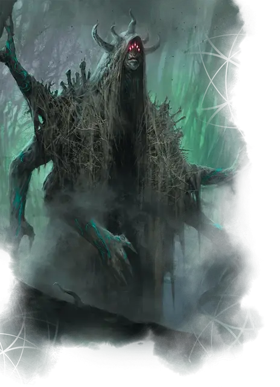

Демогот-титан
Daemogoth Titan
Громадное Исчадие, хаотично-злое

Класс Доспеха 17 (природный доспех)
Хиты 203 (11к20 + 88)
Скорость 40 футов
| мод | спас | ||
|---|---|---|---|
| СИЛ | 26 | +8 | +8 |
| ЛОВ | 10 | +0 | +0 |
| ТЕЛ | 26 | +8 | +8 |
| мод | спас | ||
|---|---|---|---|
| ИНТ | 24 | +7 | +12 |
| МДР | 18 | +4 | +9 |
| ХАР | 20 | +5 | +10 |
Навыки Восприятие +9, История +12, Магия +17, Обман +15
Иммунитет к урону психическая энергия
Иммунитет к состояниям испуг, очарование
Чувства истинное зрение 120 футов, пассивное Восприятие 19
Языки Бездны, Инфернальный, Телепатия 120 фт.
Опасность 16 (15000 опыта)
Бонус мастерства +5
Особенности
Договор страданий. Совершая 10-минутный ритуал, титан может создать магическую связь с существом, к которому он прикасается на протяжении всего ритуала. Существо становится связанным договором до тех пор, пока оно не умрет, не умрет демогот или договор не будет нарушен заклинанием исполнение желаний [wish].
Титан выбирает одно заклинание школы Некромантии или Очарования 8-го уровня или ниже. Связанное существо может наложить это заклинание, используя этот договор, без затрат материальных компонентов и используя Интеллект в качестве базовой характеристики. Когда оно накладывает заклинание, существо получает 21 (6к6) урона психической энергией, который не может нарушить концентрацию существа на заклинании. Как только связанное существо наложит заклинание таким образом, оно не сможет сделать это снова, пока не завершит продолжительный отдых.
Легендарное сопротивление (3/день). Если титан проваливает спасбросок, он может вместо этого сделать спасбросок успешным.
Действия
Мультиатака. Титан совершает три атаки Вспышкой агонии.
Вспышка агонии. . Рукопашная или Дальнобойная атака заклинанием: +12 к попаданию, досягаемость 15 футов или дистанция 120 футов, одна цель. Попадание: 17 (3к6 +7) урона силовым полем. Если целью является существо, титан восстанавливает 5 хитов.
Телепортация. Титан телепортируется в свободное пространство, которое он может видеть в пределах 120 футов.
Легендарные действия
Титан может совершать 3 легендарных действия, выбирая из указанных ниже вариантов. Лишь одно легендарное действие может быть совершено за раз, и только в конце хода другого существа. Титан восстанавливает истраченные действия в начале своего хода.
Атака. Титан совершает одну атаку Вспышкой агонии.
Преследующий кошмар (стоит 2 действия). Титан использует Телепортацию, после чего он может нацелиться на одно существо в пределах 20 футов, которое он может видеть. Цель должна совершить спасбросок Телосложения Сл 20. При провале цель получает 22 (4к10) урона некротической энергией, а титан восстанавливает 10 хитов. При успехе цель получает половину этого урона, а титан не исцеляется.
Терроризирование (стоит 3 действия). Титан нацеливается на одно существо, которое он может видеть в пределах 120 футов. Цель должна совершить спасбросок Мудрости Сл 20. При провале цель получает 38 (7к10) урона психической энергией и становится испугано титаном до конца следующего хода цели, а титан восстанавливает 15 хитов. При успехе цель получает половину этого урона и не пугается, а титан не исцеляется.
Описание
Титаны-демоготы - это огромные монстры, которые уничтожают землю вокруг себя. Демогот набирает силу в течение десятилетий, потраченных на то, чтобы питаться печалью и высасывать жизнь из природы. В конце концов, этот рост превращает демогота в титана.
Титаны сохраняют способность своих меньших собратьев обменивать магическую силу на боль смертного, но они, как правило, требуют больше мучительных страданий в обмен на свои соглашения или знания.
Колючие дары
Когда проситель вызывает интерес титана-демогота, титан может даровать просителю благословение (см. "Сверхъестественные дары"). До тех пор, пока у существа есть благословение, оно должно израсходовать и бросить две своих Кости Хитов всякий раз, когда оно заканчивает продолжительный отдых. Он получает урон психической энергией, равный общему результату бросков, а его максимальное количество хитов уменьшается на величину, равную полученному урону психической энергией. Это уменьшение длится до тех пор, пока существо не завершит свой следующий продолжительный отдых. Существо умирает, если этот эффект уменьшает его максимальное количество хитов до 0. Благословение может быть устранено только заклинанием исполнение желаний [wish].